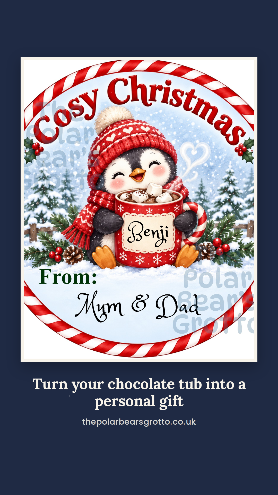
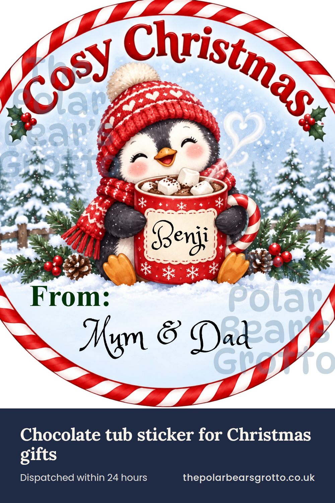

Story Tue 10 Nov 09:00 · instagram_story
Tub Topper - Penguin

Hook: 100/100 · Quality check: 100/100
Instagram / Facebook caption
3 reasons your tub of chocolates needs a personal touch
Turn a plain tub of chocolates into a personal gift with our chocolate tub sticker. This topper is made for mums and families giving chocolate tubs as gifts. Each design features a picture of their favourite thing.
Save this for the next birthday on your list.
Find them at thepolarbearsgrotto.co.uk
Other hooks considered
- 3 reasons your tub of chocolates needs a personal touch 100
- Stop handing over a plain chocolate tub this Christmas 100
- 3 chocolate tubs, 3 family members, zero hand-written labels 100
- Nobody tells you a chocolate tub can feel this personal 100
Reel Tue 10 Nov 18:30 · instagram, facebook, pinterest_video, tiktok
Postage Style Labels - NORAD
Hook: 100/100 · Quality check: 100/100
Instagram / Facebook caption
3 hours spent hand-writing Christmas labels by hand
These printed gift tags are made for busy mums wrapping lots of presents. Just peel and stick, no hand-writing needed.
Which design would you pick? Tell me below.
Find them at thepolarbearsgrotto.co.uk
Pinterest
Personalised gift tags for Christmas presents
Personalised gift tags help busy mums wrapping lots of presents. Add a picture of a hobby or favourite thing. Just peel and stick, no hand-writing needed. Great for Christmas gifts, present labels, and festive wrapping. thepolarbearsgrotto.co.uk
Link: https://thepolarbearsgrotto.co.uk
TikTok
3 hours spent hand-writing Christmas labels by hand. Personalised gift tags are made for busy mums wrapping lots of presents. thepolarbearsgrotto.co.uk #giftags #christmaswrapping #mumlifeuk #giftwrapping
Other hooks considered
- 3 hours spent hand-writing Christmas labels by hand 100
- Nobody tells you how long 20 gift tags take to write 100
- 30 presents, zero hand-written tags, one happy mum 100
- Nobody tells you how boring writing gift labels gets 92
Pinterest pin Tue 10 Nov 20:00 · pinterest
Tub Topper - Penguin

Hook: 100/100 · Quality check: 100/100
Instagram / Facebook caption
3 reasons your tub of chocolates needs a personal touch
Turn a plain tub of chocolates into a personal gift with our chocolate tub sticker. This topper is made for mums and families giving chocolate tubs as gifts. Each design features a picture of their favourite thing.
Save this for the next birthday on your list.
Find them at thepolarbearsgrotto.co.uk
Pinterest
Chocolate tub sticker for Christmas gifts
Chocolate tub sticker personalised with a name and favourite thing. Turn a tub of chocolates into a thoughtful gift for family. No hand-writing labels needed. thepolarbearsgrotto.co.uk
Link: https://thepolarbearsgrotto.co.uk
Other hooks considered
- 3 reasons your tub of chocolates needs a personal touch 100
- Stop handing over a plain chocolate tub this Christmas 100
- 3 chocolate tubs, 3 family members, zero hand-written labels 100
- Nobody tells you a chocolate tub can feel this personal 100